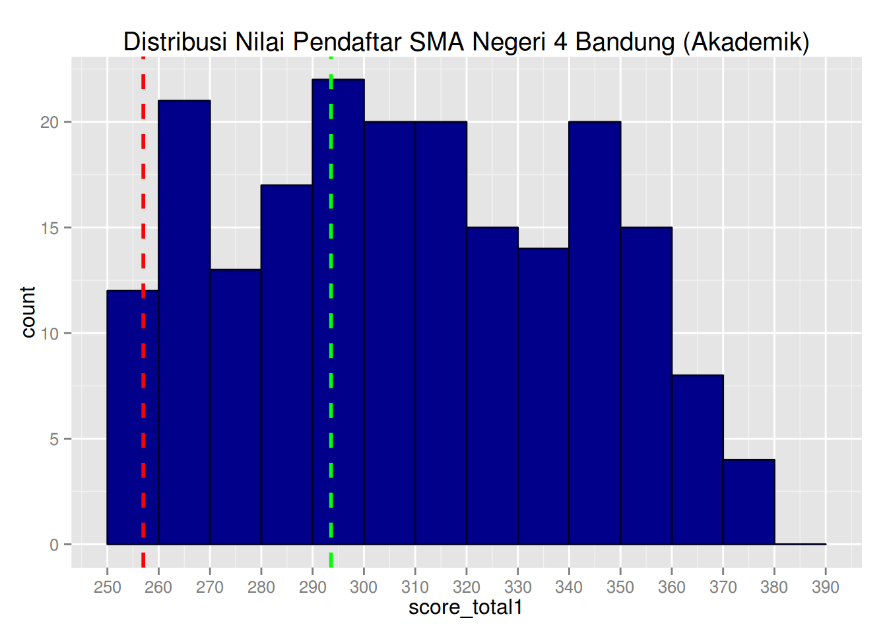
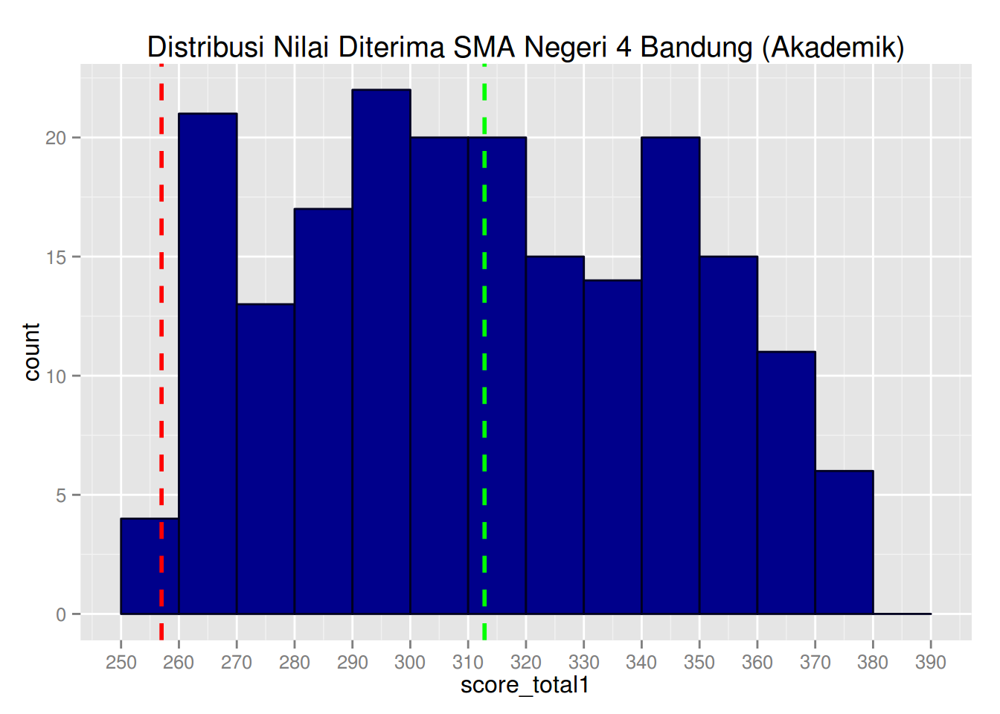
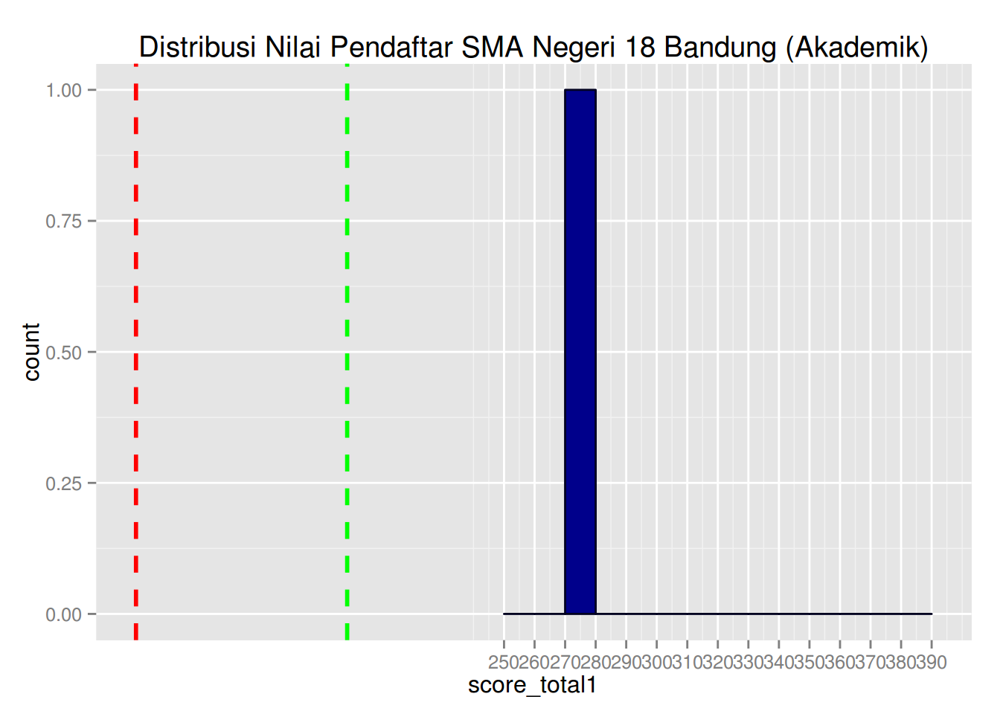
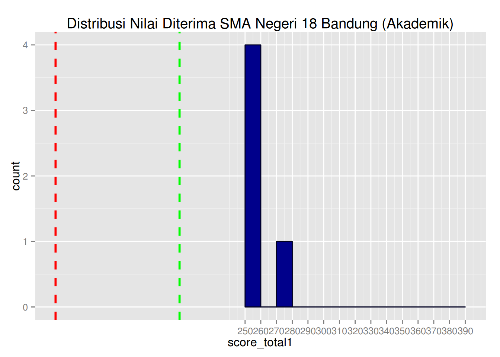

Hendy’s note: ~/Dropbox/Hendy_Projects/soluvas-scrape/sample/ppdb
install.packages('dplyr')
install.packages('ggplot2')
install.packages('scales')library(dplyr)
library(plyr)
library(pander)
library(ggplot2)
library(scales)applicant <- read.csv('/tmp/applicant.csv', header = TRUE, stringsAsFactors = FALSE)
filtered <- read.csv('/tmp/filteredapplicant.csv', header = TRUE, stringsAsFactors = FALSE)
analyze_school <- function(option_id, school_name) {
applicant_sel <- applicant[applicant$option_id == option_id,]
obj1 <- summary(applicant_sel$score_total1)
# obj1 <- pander(summary(applicant_sel$score_total1),
# caption=paste('Sinopsis Pendaftar', school_name))
filtered_sel <- filtered[filtered$option_id == option_id,]
obj2 <- summary(filtered_sel$score_total1)
#obj2 <- summary(filtered_sel$score_total1)
passing_grade <- min(filtered_sel$score_total1)
obj3 <- ggplot(data=applicant_sel, aes(x=score_total1)) +
scale_x_continuous(breaks=seq(250, 390, by=10)) +
geom_histogram(breaks=seq(250, 390, by=10), color="#000020", fill="darkblue") +
#geom_density(color="#ff6666") +
geom_vline(aes(xintercept=mean(score_total1, na.rm=T)), # Ignore NA values for mean
color="green", linetype="dashed", size=1) +
geom_vline(xintercept=passing_grade, # Ignore NA values for mean
color="red", linetype="dashed", size=1) +
ggtitle(paste('Distribusi Nilai Pendaftar', school_name))
obj4 <- ggplot(data=filtered_sel, aes(x=score_total1)) +
scale_x_continuous(breaks=seq(250, 390, by=10)) +
geom_histogram(breaks=seq(250, 390, by=10), color="#000020", fill="darkblue") +
#geom_density(color="#ff6666") +
geom_vline(aes(xintercept=mean(score_total1, na.rm=T)), # Ignore NA values for mean
color="green", linetype="dashed", size=1) +
geom_vline(xintercept=passing_grade, # Ignore NA values for mean
color="red", linetype="dashed", size=1) +
ggtitle(paste('Distribusi Nilai Diterima', school_name))
result <- list(application_summary=obj1, filtered_summary=obj2, obj3, obj4)
return(result)
}
l <- analyze_school(615, 'SMA Negeri 4 Bandung (Akademik)')
l[[1]] # Pendaftar## Min. 1st Qu. Median Mean 3rd Qu. Max.
## 25.75 263.50 296.50 293.60 330.20 376.50l[[2]] # Diterima## Min. 1st Qu. Median Mean 3rd Qu. Max.
## 257.0 285.1 311.2 312.8 340.9 376.5l[[3]]
l[[4]]
l <- analyze_school(685, 'SMA Negeri 18 Bandung (Akademik)')
l[[1]] # Pendaftar## Min. 1st Qu. Median Mean 3rd Qu. Max.
## 129.5 188.4 201.5 198.6 213.2 278.5l[[2]] # Diterima## Min. 1st Qu. Median Mean 3rd Qu. Max.
## 129.5 193.0 207.0 208.3 227.0 278.5l[[3]]
l[[4]]
#l <- analyze_school(680, 'SMA Negeri 17 Bandung (Akademik)')
#l[[1]] # Pendaftar
#l[[2]] # Diterima
#l[[3]]
#l[[4]]